Springer stoppt Bauer - ein lustiges Schulschachspiel
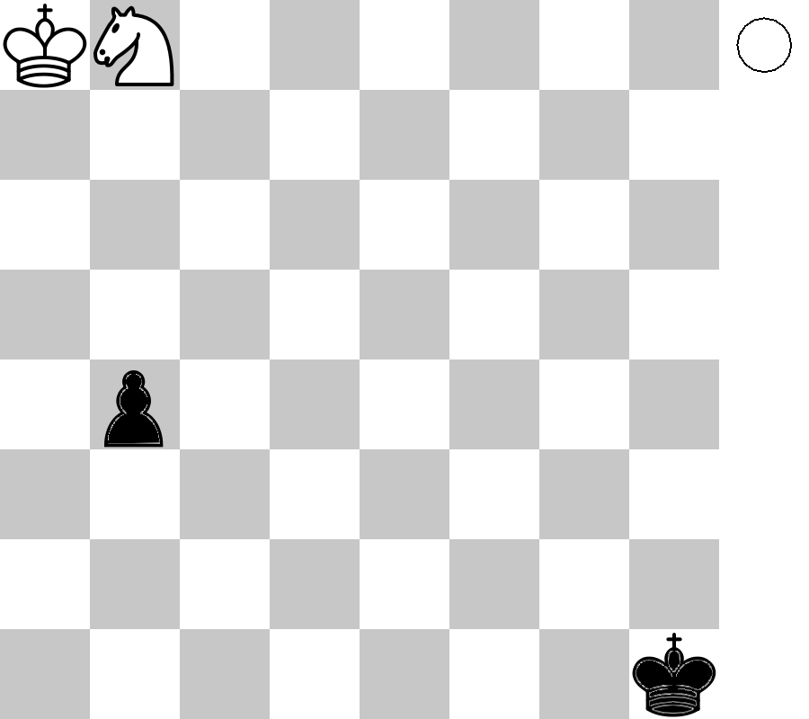
Diagramm 1
Das Spiel geht so: Am Anfang jeder Spielrunde baut der Schachlehrer am Demobrett eine Stellung wie in Diagramm 1 auf. Danach einigen sich die Schachschüler mit ihren jeweiligen Gegnern darauf, wer welche Farbe bekommt. Wenn man sich nicht einigen kann, werden die Farben ausgelost. Schwarz gewinnt, wenn er seinen Bauern in eine Dame umwandelt. Weiß gewinnt, wenn er mit seinem Springer den Bauern stoppt.
Dieses Spiel eignet sich hervorragend dazu, Vorrausberechnung im Schach zu erlernen. Vorrausberechnung ist bei dem Spiel notwendig, um: 1) in jeder Spielrunde die richtige Farbe auszuwählen, also aufgrund der Vorrausberechnung die Stellung richtig zu bewerten und 2) weil es oft einen naheliegenden, verführerischen 1.Zug gibt, der sich aber dann nach 1-10 weiteren Zügen als Fehler herrausstellt.
Methode des "Züge Zählens"
Um zu entscheiden, ob der Springer den Bauern stoppen kann, muss man oft einfach nur die "Züge zählen". In Diagramm 1 braucht Schwarz 3 Züge, um seinen Bauern umzuwandeln, nämlich b3,b2,b1D. Weiß braucht 5 Züge, bis sein Springer das Umwandlungsfeld b1 erreicht, nämlich z.B. Sc6-a5-c4-a3-b1. Mit dieser Überlegung käme man also zu dem Schluss, dass der weiße Springer den Bauern nicht stoppen kann.
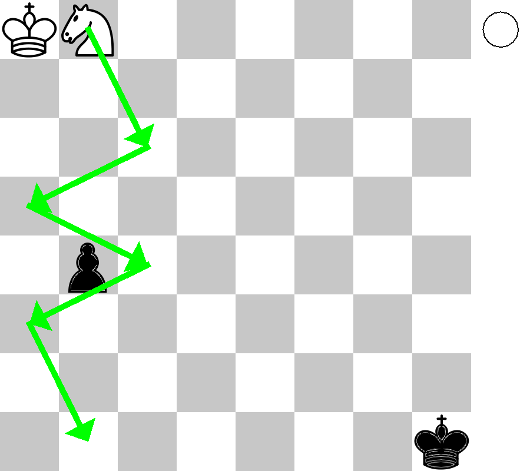
Weiß braucht 5 Züge, um das Umwandlungsfeld zu erreichen
Aufgaben
Aufgabe 1
Verändere gegenüber Diagramm 1 die Stellung des weißen Springers. Stelle ihn nacheinander auf die Felder c8,d8,e8,f8,g8 und h8 und entscheide jeweils mit der Methode des "Züge Zählens", ob der weiße Springer den schwarzen Bauern noch stoppen kann. Was fällt dir auf?
Lösungen
Lösung zu Aufgabe 1
Springer auf c8: Der Springer hält den Bauern auf, denn er braucht mit Sd6-c4-a3-b1 nur 4 Züge bis zum Umwandlungsfeld.
Springer auf d8: Der Springer ist zu langsam. Mit Sc6-a5-c4-a3-b1 braucht er 5 Züge bis zum Umwandlungsfeld.
Springer auf e8: Der Springer hält den Bauern auf, denn er braucht mit Sd6-c4-a3-b1 nur 4 Züge bis zum Umwandlungsfeld.
Springer auf f8: Der Springer ist zu langsam. Mit Se6-d4-b3-d2-b1 braucht er 5 Züge bis zum Umwandlungsfeld.
Springer auf g8: Der Springer hält den Bauern auf, denn er braucht mit Sf6-d5-c3-b1 nur 4 Züge bis zum Umwandlungsfeld.
Springer auf h8: Der Springer ist zu langsam. Mit Sg6-f4-e2-c3-b1 braucht er 5 Züge bis zum Umwandlungsfeld.
Zusammenfassend: Mit dem weißen Springer auf einem schwarzen Feld ist der Springer zu langsam. Bei dem Springer auf einem weißen Feld hält der Springer den schwarzen Bauern auf. Dies hängt damit zusammen, dass der Springer mit jedem Zug die Felderfarbe wechselt.
Der Tempogewinn
Betrachten wir die Position in Diagramm 2. Kann Weiß den Bauern noch stoppen?
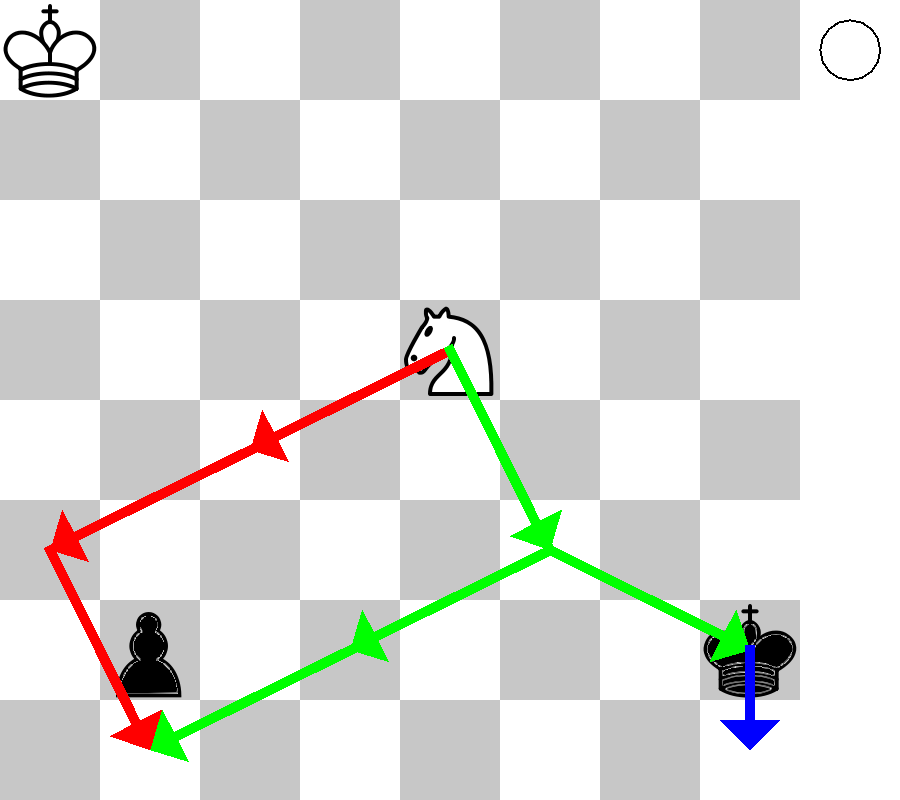
Diagramm 2
Nach der Methode des "Züge Zählens" bräuchte Schwarz 1 Zug, um seinen Bauern umzuwandeln. Weiß hingegen bräuchte 3 Züge, um das Umwandlungsfeld zu erreichen, nämlich z.B. Sc4-a3-b1. Nach dieser Überlegung wäre Weiß also zu langsam.
Weiß bräuchte einen Zug mehr Zeit. Wenn man im Schach die Zeit in Zügen angibt, kann mann statt "Zug" auch "Tempo" sagen. Also bräuchte Weiß ein Tempo mehr Zeit.
Dieses Tempo gewinnt Weiß durch ein Schachgebot, durch das er gleichzeitig dem Umwandlungsfeld b1 näher kommt. Schwarz müsste dann erst mal einen Königszug verschwenden, um das Schach zu parieren.
Den Zug, den Weiß mit dem Schachgebot gewinnt, nennen wir einen Tempogewinn.
Den Zug, den Schwarz mit dem Königszug verwenden muss, nennen wir einen Tempoverlust.
Also gewinnt Weiß wie folgt: 1.Sf3+ (Tempogewinn) 1...Kh1 (Tempoverlust) 2.Sd2 b1D 3.Sxb1.
Man kann immer noch die Züge zählen: Nun braucht Schwarz 2 Züge bis zur Bauernumwandlung, nämlich Kh1 und b1D. Weiß braucht immer noch 3 Züge, um das Umwandlungsfeld zu erreichen, nämlich Sf3-d2-b1. Da Weiß beginnt, ist Weiß also schnell genug und kann den Bauern stoppen.
Aufgaben
Aufgabe 2
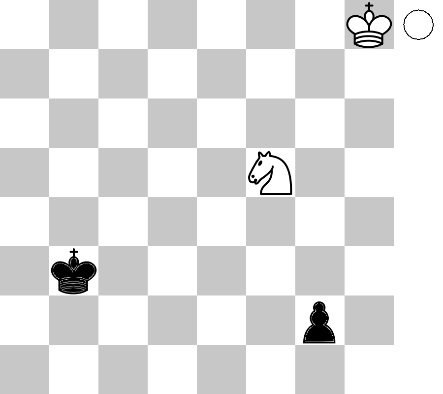
Diagramm 2
Aufgabe 3
Diagramm 2
Aufgabe 4
Diagramm 2
Aufgabe 5
Diagramm 2
Aufgabe 6
Diagramm 2
Aufgabe 7
Diagramm 2
Tipps
Tipp für alle Aufgaben: Auf welchem Feld kann der weiße Springer ein Tempo/einen Zug gewinnen, d.h. auf welchem Feld bietet der weiße Springer dem schwarzen König Schach und kommt dadurch gleichzeitig dem Umwandlungsfeld des schwarzen Bauern näher?
Die Springergabel
Den Doppelangriff des Springers auf zwei Figuren nennt man auch Springergabel. In Diagramm 3,4 und 5 siehst du Beispiele für Springergabeln.
Sind die beiden Angriffsziele König und Dame des Gegners, so nennt man dies auch Familienschach. In Diagramm 5 sehen wir also ein Familienschach.
Das Familienschach ist oft die letzte Möglichkeit, um den Bauern noch rechtzeitig zu stoppen. Dies illustriert folgendes Beispiel:
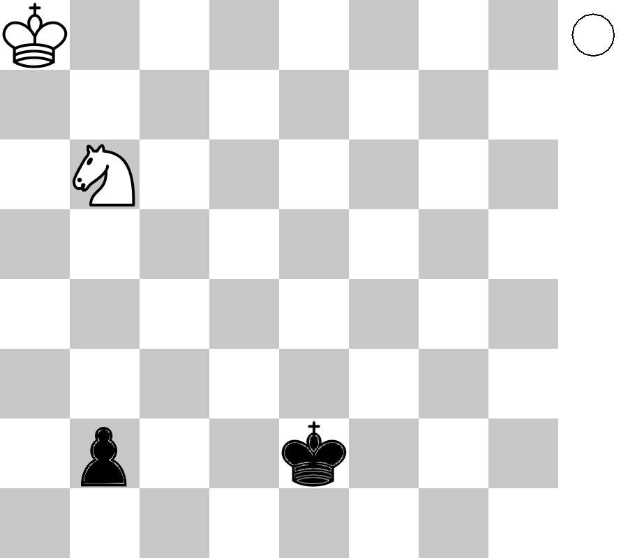
Diagramm 6 - Familienschach
Weiß stoppt den Bauern mit 1.Sa4 b1D 2.Sc3+ Kegal 3.Sxb1
Versucht Weiß das "Gabelfeld" c3 über d5 zu erreichen verliert er: 1.Sd5? Kd2! (1...b1D? 2.Sc3+ Kegal 3.Sxb1)
Weiß kann den Bauern nicht stoppen, wenn der weiße König statt auf a8 auf b8 stünde. Denn dann würde Schwarz mit gleichzeitigem Schachgebot umwandeln. 1.Sa4 b1D mit Schach.
Die Blockade
Besetzt der weiße Springer das Umwandlungsfeld des schwarzen Bauern oder kontrolliert er es, so hindert er den Bauern an der Vorwärtsbewegung und damit an der Umwandlung. Man sagt dann auch: Der weiße Springer blockiert den schwarzen Bauern.
Betrachten wir Diagramm 7.
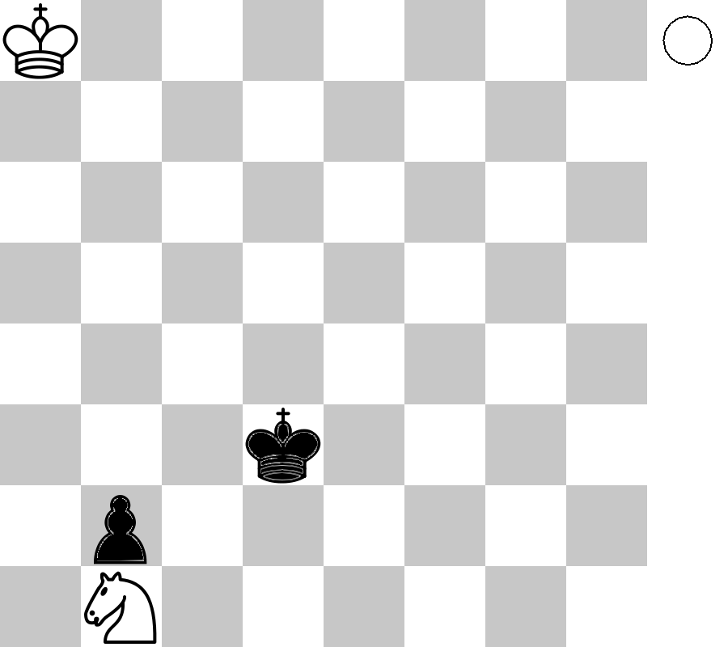
Diagramm 7
Der schwarze Bauer ist zwar blockiert, aber kann nicht der schwarze König diese Blockade brechen, indem er den weißen Springer vertreibt? Sehen wir uns einen möglichen Spielverlauf an: 1...Kc2 2.Sa3+ Kb3 3.Sb1 Ka2 3.Sc3+ Kb3 4.Sb1 usw...
Wie lange soll das so weitergehen? Antwort: Nach einer 3-fachen Stellungswiederholung endet eine Schachpartie Unentschieden. Ebenso endet eine Schachpartie Unentschieden, wenn 50 Züge lang nichts geschlagen wird. Außerdem können sich beide Spieler jederzeit auf Unentschieden einigen. Mit diesen Regeln sollte die Stellung in Diagramm 7 auf jeden Fall Unentschieden enden.
Allgemein gilt:
Besetzt der weiße Springer das Umwandlungsfeld des schwarzen Bauern, so kann diese Blockade nicht gebrochen werden.
Kontrolliert der weiße Springer hingegen nur das Umwandlungsfeld, so gibt es Fälle, bei denen diese Blockade gebrochen werden kann. Sehen wir uns dazu Diagramm 8 an.
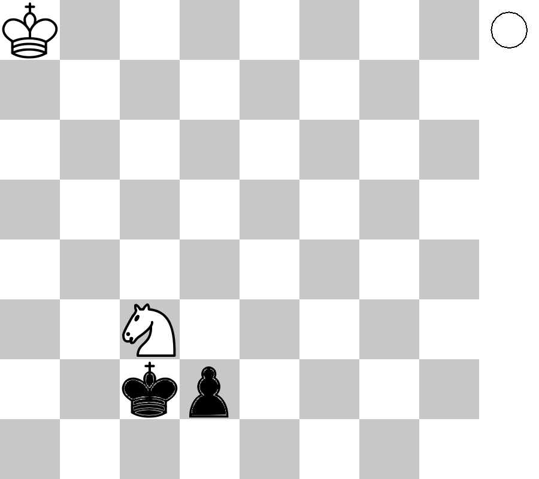
Diagramm 8
Weiß verliert nach 1.Sd5 Kd3 (1...d1D? 2.Se3+ Familienschach) 2.Sf4+ Ke3 3.Sd5+ Kd4 0-1
Auch im nächsten Beispiel kontrolliert der weiße Springer das Umwandlungsfeld und Weiß verliert trotzdem:
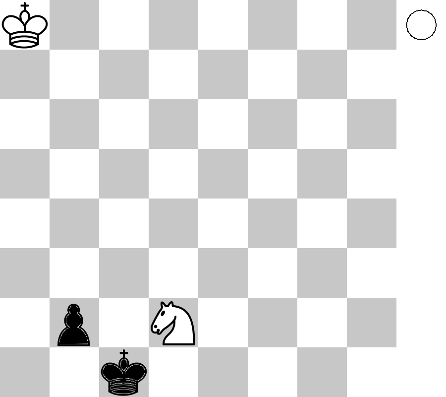
Diagramm 9
Weiß verliert nach 1.Sb3+ Kd1 0-1
Aufgaben
Aufgabe 1
Wenn du gegenüber Diagramm 9 alle Figuren um eine Linie nach rechts versetzt, ändert sich dann dadurch etwas an der Stellungsbeurteilung?
Die Blockade des Randbauern
Die erste Regel lautet:
Blockiert der weiße Springer den schwarzen Bauern auf der 3.Reihe, so kann diese Blockade nicht gebrochen werden.
Sehen wir uns dazu Diagramm 10 an.
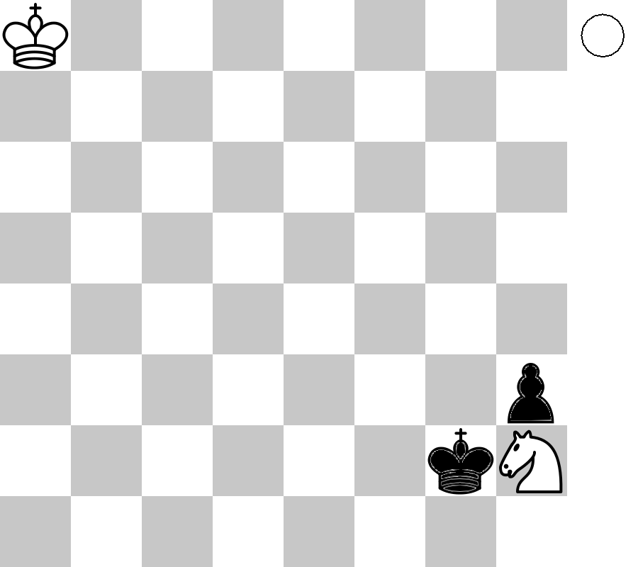
Diagramm 10
1.Sg4 Kg3 2.Se3! Kf2 (2...h2 3.Sf1+) 3. Sg4+ Kf3 4.Sh2+ Kg3 5.Sf1+ Kg2 6.Se3+ Kf3 7.Sf1 Kf2 8.Sh2 1/2-1/2
Sehen wir uns nun den Fall, dass der schwarze Bauer schon auf der 2.Reihe steht, an.
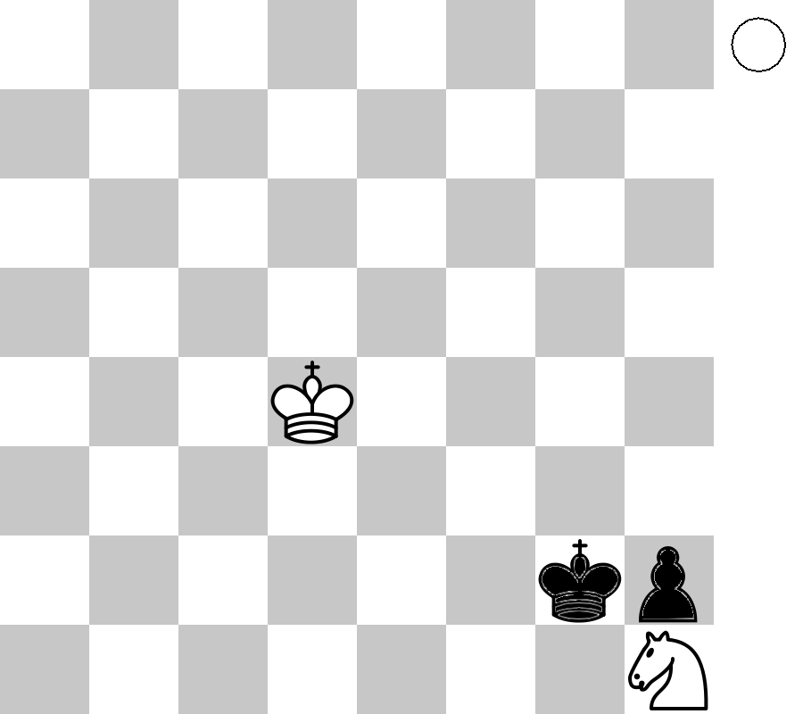
Diagramm 11
Die Partie endet Unentschieden nach 1.Ke3 Kxh1 2.Kf2 Patt
Wäre hingegen Schwarz am Zug, so würde er mit 1...Kxh1 gewinnen.
Die zweite Regel lautet also:
Ist der schwarze Bauer schon auf der 2.Reihe, so hängt der Ausgang der Partie davon ab, ob der weiße König nahe genug steht, um den schwarzen König in der Ecke pattzusetzen.
Die Barriere
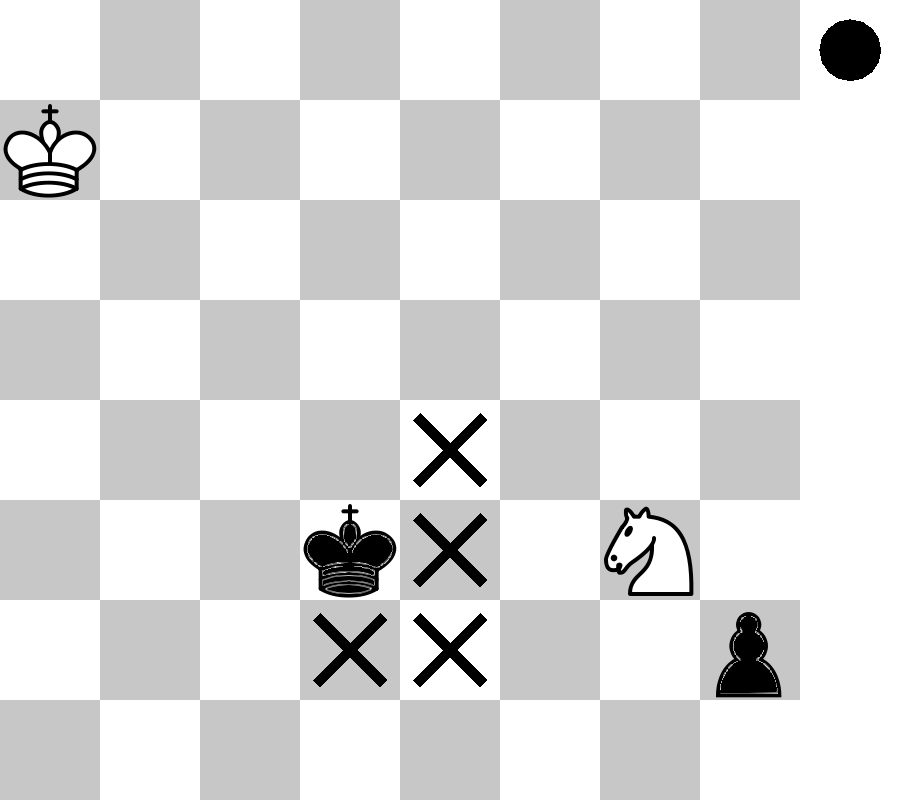
Diagramm 12
Die Felder mit dem Kreuz bilden eine Barriere, durch die der schwarze König nicht hindurch kann. Die Felder e2 und e4 kann der schwarze König nicht betreten, weil sie vom weißen Springer kontrolliert werden. Die Felder e3 und d2 kann der schwarze König auch nicht betreten, denn sonst würde die Springergabel Sf1+ folgen.
Umgeht Schwarz die Barriere, so kommt es darauf an, ob der weiße König schnell genug ist, um den schwarzen König in der Ecke pattzusetzen. Zählen wir also die Züge: Schwarz braucht mit Kc2-d1-e1-f2-g2-h1 oder Kd4-e5-f4-f3-g2-h1 6 Züge, um den weißen Springer in der Ecke zu schlagen.
Weiß braucht hingegen mit Sh1, Kb6-c5-d4-e3-f2 auch 6 Züge, um den schwarzen König in der Ecke pattzusetzen, also Unentschieden.
Eine andere Barriere sehen wir im nächsten Diagramm:
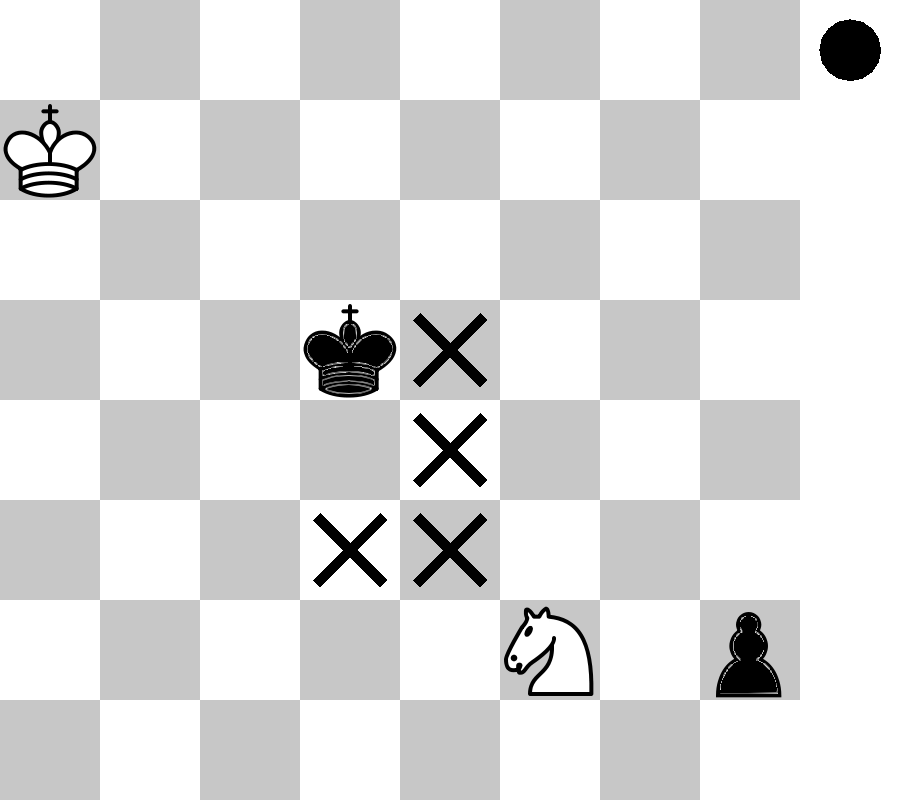
Diagramm 13
Wie oben muss der schwarze König die Barriere umgehen und wir können die Züge zählen, um vorherzusehen, wie die Partie ausgeht.